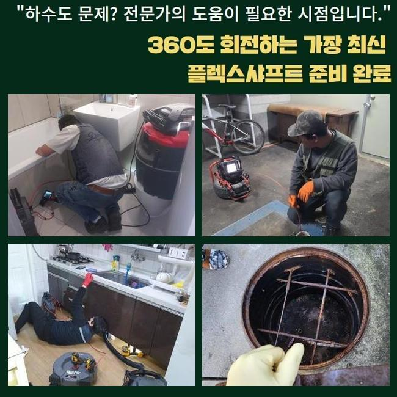
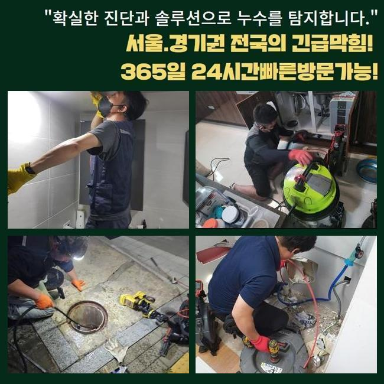
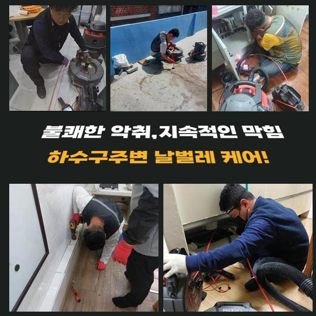
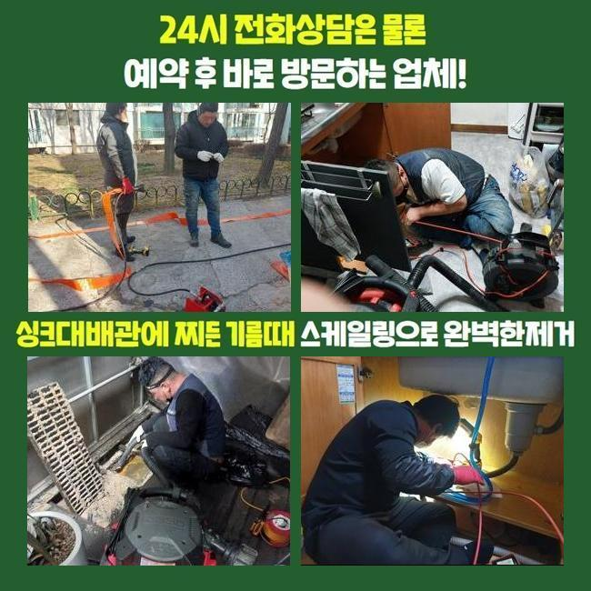
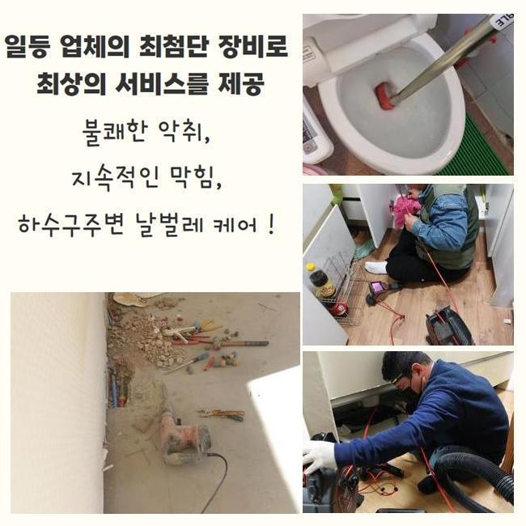

🏠 광주 장지동대변기막힘 초월읍 배관내시경카메라 부속수리
광주 장지동 변기막힘 전문 시공 후기

📋 작업 개요
- 위치: 광주 장지동, 장지동, 광주
- 서비스 유형: 변기막힘, 하수구막힘, 배관막힘, 맨홀막힘, 역류해결, 뚫는업체, 배관청소, 고압세척, 악취차단
- 작업 일시: 2025. 2. 9. 17:30
- 업체명: 하수구수사대 (010-5615-2118)
🔍 문제 상황
광주 장지동대변기막힘 초월읍 배관내시경카메라 부속수리
근처의 건물에서 배수 성능의 불통때문에 당장 영업이 안 된다며 말씀하시면서 얼른 출장와달라고 연락을 직접 받았는데요
음식점과 같은 매장은 주방의 하수구가 차단되는 사건 때문에 당장 물을 사용하지 못한다면 조리나 청소를 하지 못하니 장사를 할 수가 없겠죠
얼른 수돗물이 소통되게 해줘야 고객님이 입을 악영향도 축소시킬 수 있기에 지체없이 출장가서 보완해드린다고 약속드렸어요
저희가 가자마자 고객님은 배수구가 지장이 생긴건지 물 내려감이 더디고 옥외에 마련된 하수구에서 역류까지도 발생해서 더 난감하다고 호소하셨습니다
가까이서 점검할 수 있는 바닥 배수구를 우선은 관찰한 다음 옥외배관까지 수습을 해드려야 하므로 다소 까다로운 작업이 불가피했습니다
문제되는 장소를 마주하면 설비상의 애로사항들을 전체적으로 참고하여 완성까지 이르는 작업 진행시간에 대해서 검토해 봅니다
복잡다단한 구조라거나 막힌 구간이 다수라면 말끔하게 고치려면 평균보다 시간이 더 들기도 해요
식당 밖에 있는 하수구 안을 체크하고자 가봤더니 맨홀 겉면이 녹이 일어나 있는 상태였고 맨홀 옆의 바닥도 심히 젖어있다보니 정돈되지 않은 상태였습니다
설비나 부속품의 훼손이 최대한 없을 수 있도록 집중력을 발휘하여 뚫어야겠다고 다짐하고 상황 분석에 돌입했습니다

🔎 원인 분석
💡 전문가 진단: 정밀 진단 장비를 사용하여 슬러지의 고착 여부를 판명하고 타격/세척 작업을 실시했습니다.
배수로 안의 첫인상은 오염원인들이 바로 드러났습니다
뭉쳐있는 기름찌꺼기들이 가득 차올랐다는 사실을 즉시 인식할 수 있을 정도로 오염이 심해서 초반부의 정리작업을 들어가서 안을 닦아내야 했습니다
가장 먼저 주방배관부터 작업에 들어간 다음 배관을 보는 내시경기를 내려보내서 확인하게 되는데요
내외부의 하수관들이 어떻게 이어져 있는지 밑그림을 그린 후에는 고압의 물줄기를 발사해서 관로 사이사이에 끼어있는 슬러지들을 모두 없애기로 정하게 되었습니다
이 상태로는 내시경을 진입시켜도 현황을 인식하기 어려울 듯 하여 안에 고인 물을 빼내는 석션 가동을 실시해주었습니다
석션장치는 일반 청소기처럼 진공 방식으로 동작하는데 찰랑거리는 하수와 침전물들을 철저히 빨아당겨 없애는 기능을 맡아줍니다
흡수하는 힘이 남다르므로 유연한 재질의 찌꺼기는 쉽게 기다란 석션 속으로 모이게 됩니다
찐득찐득한 제형이라거나 돌덩이처럼 건조되어 있는 물질들은 잘 떨어지지 못하니 석션만 돌려서는 배수로를 통쾌하게 소통시키는 현장들이 많지않은 것이 사실입니다
하지만 처음과 마무리에 변함없이 석션기를 활용하여 작업할 정도로 배수로 기능을 되돌리는 업무를 위해서는 반드시 써야 하는 장치입니다
석션을 돌려서 배관 통로를 가볍게 치워준 다음에 다음으로 카메라를 내려보냈죠
이 카메라의 기능으로는 얽혀있는 형상으로 독특하게 배치된 배수관일지언정 구석구석 조사해보며 원인이 된 대상과 타격을 입은 구역들에 대해 관측할 수 있어요

🔧 작업 과정
이번에 본 파이프를 떠올려보면 기름기가 잔뜩 고인 유분막이 많이 관찰됐습니다
계속 모이면서 커져버린 이 장애물이 이번에 연락주신 식당의 확실한 이유일 것이라는 추정이 됐습니다
조리하다가 바닥 배관으로 새어나간 기름 성분이 점점 유속을 느리게 만들었고 접착되어 액상인 수돗물 마저 유동성을 잃어버리고 턱 막혀버려서 역류까지 일어난 거였네요
석션 샤프트를 번갈아가면서 정화작업을 거치면서 실내 관로와 연결된 맨홀 내부의 시설물까지 개선을 해줘야 했습니다
플렉스 샤프트는 유연한 몸체를 지녔고 예리한 금속의 헤드가 장착되어 있습니다
석션기로는 수습이 안되는 크기가 큰 침전물이나 배관과 혼연일체가 된 물질을 긁어서 없애거나 잘게 쪼갤 수 있어요
이런 샤프트기기와 잔처리를 하는 석션 내부관찰용 카메라까지 빠짐없이 번갈아가면서 사용해야지 맡은 바인 청소가 완수될 수 있으며 꿈쩍도 하지 않는 배관의 통로도 다시 나오게 됩니다
상세하게 파이프라인을 들여다보니 관로가 큰 편에 많이 지저분하여 고압의 물을 분사하는 청소기법도 추가할 필요가 보였는데요
스케일링과 흡입을 반복해서 하수의 이동성이 제법 나아짐이 느껴졌기에 고압세척기를 넣어서 속시원하게 청소해 나갔습니다
강한 물대포를 정확한 포인트로 이동시켜주는 노즐을 조절해서 이물질의 밀집도가 높은 파트를 씻어나가기 시작했습니다
집중력있는 기기의 사용으로 부피감이 상당했었던 슬러지들이 싹 사라졌네요
청소기기를 돌리기 전에 내시경으로 관로의 형상과 심각도를 관심있게 조사해보고 다양한 스킬을 통한 배관청소를 이행하여 내부에 있던 이물질을 삭제시켜야하는 이번 현장에서도 대성공을 맛보게 됐네요
오늘의 프로세스를 끝내고 현황이 얼마나 달라졌나 체크하니 전이랑은 딴판으로 지저분한 오염물질들도 너는 사라졌었고 오염됐던 내부 벽면도 오물을 벗겨내서 아래까지 개방되어있는 파이프를 보게 되어 뿌듯한 마음이었습니다
희뿌연한 색으로 관로에 고정되어있던 하수도 삭제됐고 장비에 묻어나왔던 유해한 물질들이 없어졌습니다
아무래도 음식점과 같은 매장은는 기름을 쓰는 양도 최소한 곱절은 많으므로 아무래도 막힘이 생길 사태가 더 자주 일어납니다
손질한 식자재의 부속물이나 미끌미끌한 기름기가 물과 섞여 내려가지 않게 주방시설을 활용할 때 오염을 방지해야 합니다
육안상으로 개선을 체크했더라도 물의 폐기 과정을 확인하면서 시공이 결함없이 처리되었는지 더블체크를 해보게 됩니다


✅ 작업 완료
부엌에서 일부러 물을 다량 내려보내면서 깨끗하게 변모한 옥외 하수시설까지 중단되는 텀이 없이 물이 잘 방출되는지 체크해주는 작업입니다
통수검사를 위해 부은 물이 맨홀로 세차게 들어오는 것을 보이니 비로소 마감해도 될 듯 했어요
하수배관이 정상화가 됐으니 완성도를 체크했다면 장비를 챙겨 나왔습니다
하수구가 봉인되어 버리면 쉽게 해결되지 않을까하는 기대로 셀프 뚫음을 시도하시다가 상태가 더 심화되기도 합니다
하수구 하자가 생겼음을 알려주시면 얼른 달려가서 막힘이 빚어진 사유부터 추적해서 없애드리니 먼저 연락부터 주시면 되겠습니다



⚠️ 하수구 배관 막힘 예방 및 관리 가이드
- ✅ 머리카락, 비닐, 물티슈 등 물에 분해되지 않는 이물질은 하수구 유입을 절대 금지해 주세요.
- ✅ 하수구 거름망을 씌우고 모여진 이물질은 주기적으로 쓰레기통에 바로 비워주셔야 합니다.
- ✅ 배관 노후가 심할 경우 이물질이 더 쉽게 걸리므로 주기적인 배관 세척(고압세척 등)을 권장합니다.
- ✅ 작업 후 1년 이내 재발 시 하수구수사대에서 무상 A/S 보증 서비스를 제공합니다.
💡 핵심 정리
- 확실한 장비 작업(내시경 점검 및 샤프트 스케일링)으로 원인을 뿌리 뽑습니다.
- 작업 후 1년 이내에 동일한 부위 재발 시 100% 무상 A/S 서비스를 보장합니다.
- 서울 · 경기 · 인천 전 지역에 24시간 언제든 긴급 출동할 수 있도록 항시 대기 중입니다.
❓ 자주 묻는 질문 (FAQ)
🚨 광주 장지동 변기막힘 문제로 고민이신가요?
정확한 원인 진단과 확실한 시공으로 재발 없는 해결을 약속드립니다.
24시간 긴급 출동 | 서울 · 경기 · 인천 전지역 | 1년 내 재발 시 무상 A/S